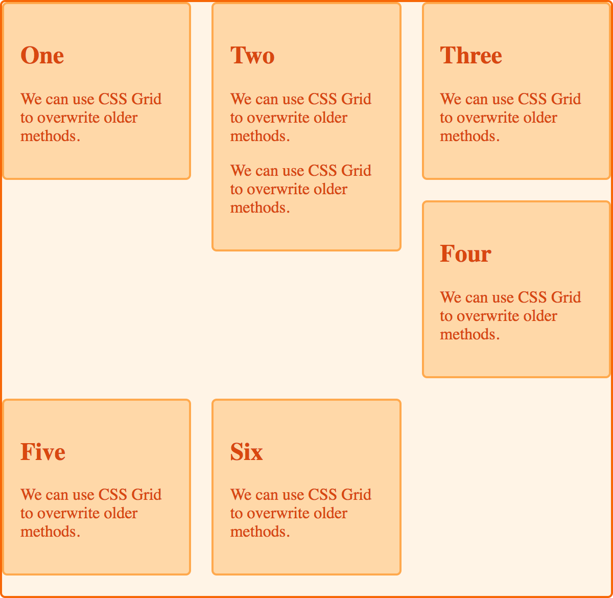

CSS Grid
El CSS Grid es un mecanismo de maquetacion en rejilla para crear paginas web y diseñar con libertad lo que hagamos.
Se trata de una distribucion de filas y columnas de manera que se puedan posicionar en cualquier parte, tener cualquier tipo de tamaño deseas y regiones con capas diferentes algo como dividir una pagina de diferentes formas o hacer un collage de diferentes formas y separadas.
Con este tenemos bastantes ventajas como un control total de dos dimensiones, no son tablas que requieren estar juntas, colocar cualquier items en ellas y la ayuda de colocar items con su caracteristica de auto-placent.
de Zúñiga, F. G. (2021, 15 junio). ¿Qué es CSS Grid? Blog de arsys.es. https://www.arsys.es/blog/programacion/css-grid-layout/